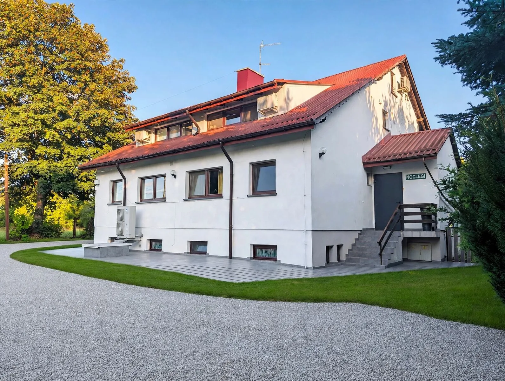
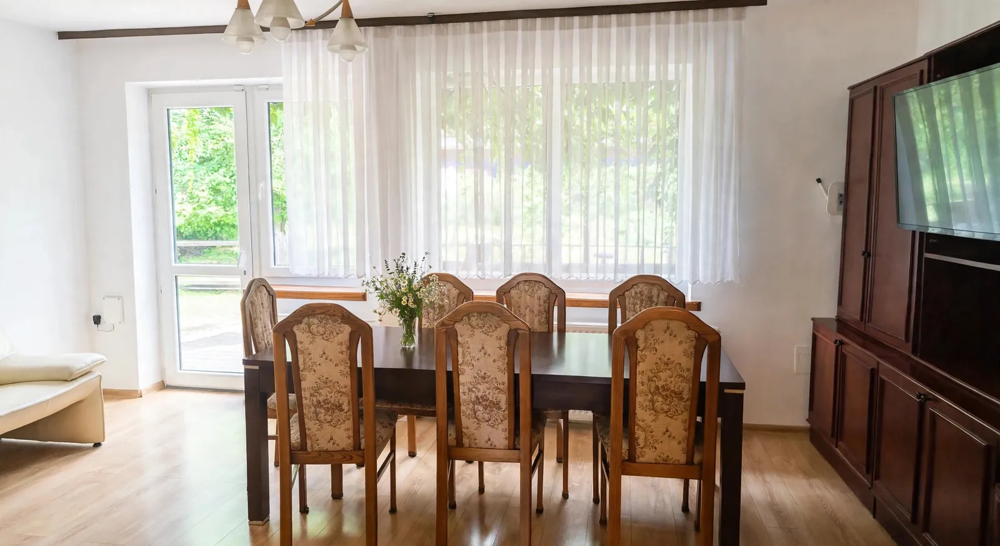
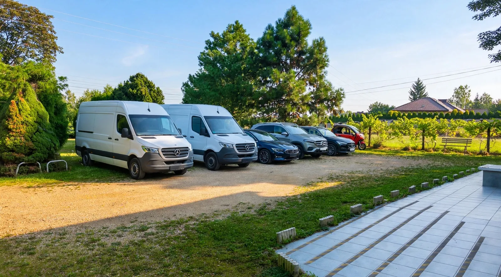
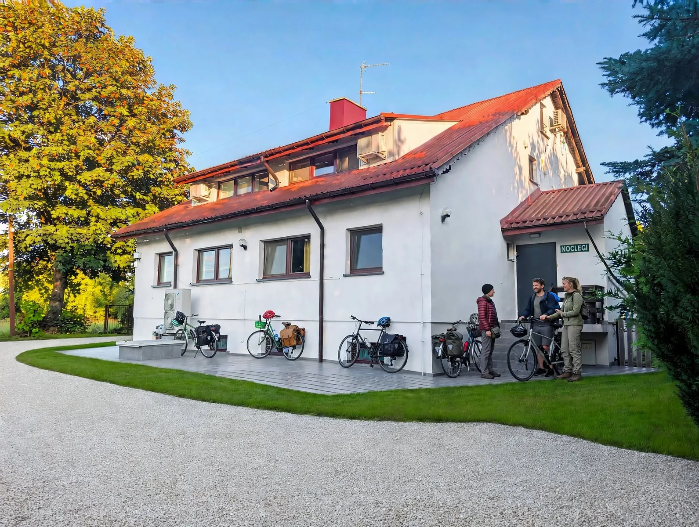
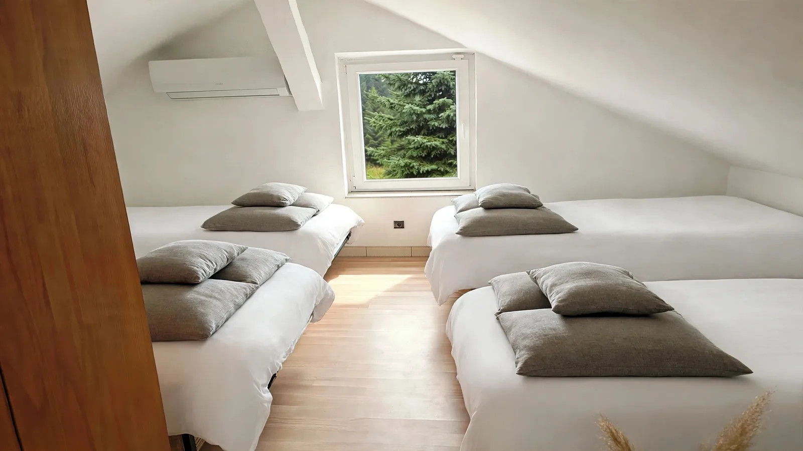
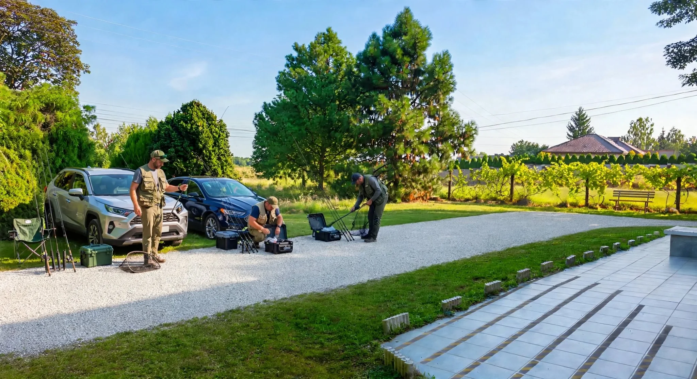
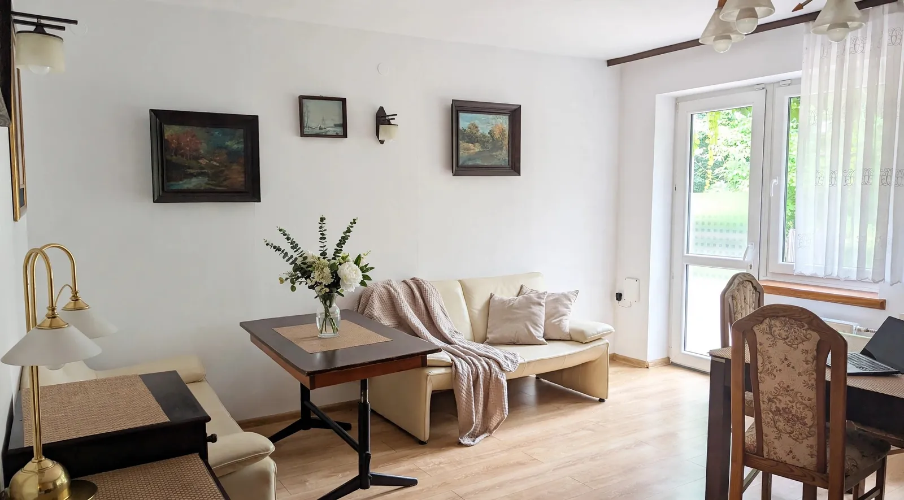
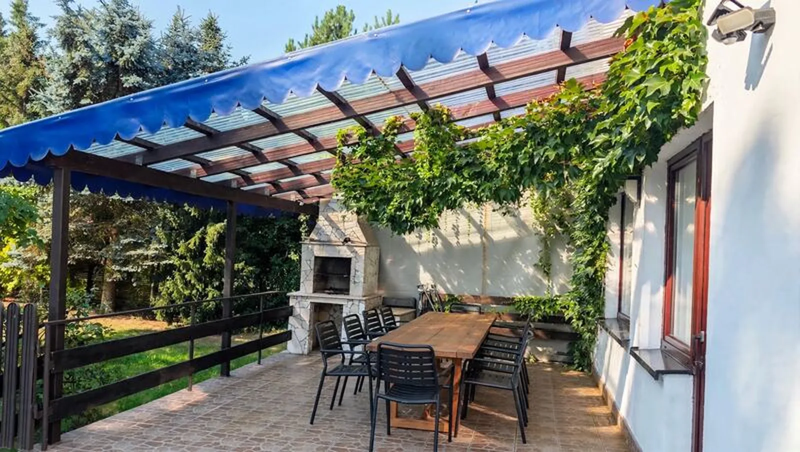

Wygodny nocleg we dwoje
Prywatna łazienka, dostęp do Wi-Fi i wspólnej kuchni. Bez klimatyzacji.
Pokoje Gościnne w Kamyku, 6 km od Kłobucka i 10 km od Częstochowy. 7 pokoi 2-, 3- i 4-osobowych z prywatnymi łazienkami, wspólna kuchnia i parking. Noclegi już od 50 zł, także na jedną noc lub dłużej.
Przyjeżdżasz do pracy, odwiedzasz rodzinę lub zwiedzasz okolice Częstochowy? U nas odpoczniesz w spokojnym Kamyku, z wygodnym dojazdem do Kłobucka i DK43.
Pokoje znajdują się w domu na terenie gospodarstwa rolnego prowadzonego przez właścicielkę. Goście mają do dyspozycji wspólną kuchnię. To wygodna baza na pobyty prywatne i pracownicze w okolicach Kłobucka oraz Częstochowy.
Zapytaj o dostępność →

Znajdziesz nas w Kamyku, w pobliżu Kłobucka i Częstochowy. To praktyczna baza wypadowa dla osób pracujących w okolicy i gości podróżujących po regionie.
Wybierz pokój 2-, 3- lub 4-osobowy. Każdy ma prywatną łazienkę, a klimatyzacja znajduje się w pokojach 3- i 4-osobowych.
Prywatna łazienka, dostęp do Wi-Fi i wspólnej kuchni. Bez klimatyzacji.
Prywatna łazienka, klimatyzacja, Wi-Fi i dostęp do kuchni.
Prywatna łazienka, klimatyzacja, Wi-Fi i wspólna kuchnia.
Pokoje dla pracowników, gości odwiedzających Kłobuck i Częstochowę oraz pielgrzymów. Wybierz rodzaj pobytu i sprawdź szczegóły.

7 pokoi 2-, 3- i 4-osobowych, prywatne łazienki, wspólna kuchnia, pralka, bezpłatny ogrodzony parking dla aut służbowych i busów. Wystawiamy rachunki.
Sprawdź ofertę dla firm ↗
Pokoje w Kamyku, 6 km od Kłobucka. Dobry wybór na krótki nocleg, pobyt rodzinny lub delegację. Do dyspozycji gości jest wyposażona kuchnia.
Poznaj noclegi koło Kłobucka ↗
Pokoje z prywatnymi łazienkami w Kamyku, 10 km od Częstochowy. Wygodny dojazd do Kłobucka, DK43 i DK1 Warszawa–Katowice.
Sprawdź noclegi w okolicy ↗Zatrzymaj się poza centrum Częstochowy. Pokoje 2-, 3- i 4-osobowe z dostępem do wspólnej kuchni, także na jedną noc.
Sprawdź noclegi dla pielgrzymów ↗Dostępność pokoi i warunki pobytu potwierdzamy indywidualnie.
W Kamyku odpoczniesz po dniu spędzonym na szlaku lub nad wodą. Sprawdź, co znajdziesz w pobliżu i z jakich udogodnień skorzystasz na miejscu.
Kamyk to baza na wycieczki w kierunku Olsztyna, Złotego Potoku, Kłobucka i Wręczycy. W pobliżu są lasy, tereny zielone i Grodzisko.
Na terenie obiektu można bezpiecznie przechować rowery i sprzęt. Po całym dniu na trasie czekają pokoje z prywatnymi łazienkami.
Według informacji właścicielki obiekt znajduje się 6 km od Kłobucka i 10 km od Jasnej Góry. Przebieg i długość planowanej trasy warto sprawdzić przed wyjazdem.
Zapytaj o wolny termin ↗
W rejonie Grodziska, Wręczycy Wielkiej i Kłobucka znajdują się stawy hodowlane oraz łowiska komercyjne. Przed wyjazdem warto sprawdzić zasady i dostępność wybranego łowiska.
Po dniu nad wodą goście mogą odpocząć w pokojach z prywatnymi łazienkami, skorzystać ze wspólnej kuchni, tarasu z murowanym grillem i ogrodu.
Dostępny jest duży, ogrodzony parking. To praktyczna propozycja również dla grup wędkarskich.
Zapytaj o wolny termin ↗Poza pokojami goście mogą korzystać z przestrzeni wspólnych. To miejsce na wspólny posiłek, chwilę relaksu lub odpoczynek po dniu pracy i zwiedzania.


Najważniejsze warunki pobytu w jednym miejscu — bez konieczności szukania informacji w różnych zakładkach.
Łącznie 7 pokoi 2-, 3- i 4-osobowych z własnymi łazienkami. Klimatyzacja jest w pokojach 3- i 4-osobowych; pokoje 2-osobowe jej nie mają.
Cena zaczyna się od 50 zł. Ostateczna stawka zależy od terminu, rodzaju pokoju, liczby osób i długości pobytu — zapytaj o wycenę.
Minimalny pobyt to jedna noc. Dostępne są też pobyty długoterminowe, np. dla osób pracujących w okolicy.
Goście mają do dyspozycji aneks kuchenny: 2 lodówki, płytę gazową, mikrofalówkę, czajnik, naczynia i garnki. Można także skorzystać z pralki.
Na miejscu dostępny jest duży, ogrodzony i bezpłatny parking dla samochodów służbowych i busów oraz miejsce do bezpiecznego przechowania rowerów i sprzętu.
Wyżywienie we własnym zakresie. Goście samodzielnie korzystają ze wspólnej kuchni. Sklepy DINO i Biedronka są w promieniu 800 metrów.
Zobacz odnowione pokoje, łazienki, kuchnię, salon i teren obiektu. Kliknij zdjęcie, aby je powiększyć.
Przed przyjazdem skontaktuj się z obiektem, aby potwierdzić dostępność w wybranym terminie. Nie prowadzimy automatycznej rezerwacji online.
Tak. Minimalny pobyt to jedna noc. Dostępność konkretnego pokoju i cenę potwierdzimy podczas kontaktu.
Tak, przyjmujemy również zapytania o dłuższe pobyty, w tym zakwaterowanie pracowników. Podaj planowany termin oraz liczbę osób, aby ustalić szczegóły.
Ceny zaczynają się od 50 zł. Ostateczna stawka zależy od terminu i wybranego pokoju. Szczegółową wycenę otrzymasz po kontakcie z obiektem.
Obiekt dysponuje 7 pokojami: 2-, 3- i 4-osobowymi. O dostępność konkretnego rodzaju pokoju najlepiej zapytać przed przyjazdem.
Nie. Klimatyzacja jest w pokojach 3- i 4-osobowych. Pokoje 2-osobowe nie są klimatyzowane.
Tak, każdy pokój posiada prywatną łazienkę.
Tak. W aneksie kuchennym są 2 lodówki, płyta gazowa, mikrofalówka, czajnik, naczynia i garnki. Wyżywienie jest we własnym zakresie.
Tak, istnieje możliwość skorzystania z pralki. O szczegóły zapytaj podczas ustalania pobytu.
Tak. Na miejscu jest duży, ogrodzony i bezpłatny parking dla samochodów służbowych i busów oraz miejsce do bezpiecznego przechowania rowerów i sprzętu.
Pokoje Gościnne mieszczą się przy ul. Stefana Żeromskiego 87, 42-125 Kamyk — 6 km od Kłobucka i 10 km od Częstochowy. Trasę możesz wyznaczyć z sekcji lokalizacji.
Przydadzą się daty przyjazdu i wyjazdu, liczba osób oraz informacja, czy preferujesz pokój 2-, 3- czy 4-osobowy.
Tak. Podaj liczbę gości oraz potrzebny podział na pokoje. Możliwość zakwaterowania grupy zależy od dostępności w danym terminie.
Zadzwoń pod numer 601 461 707 lub wyślij wiadomość przez WhatsApp. Dostępność i ostateczną cenę potwierdza właścicielka.
Tak, wystawiamy rachunki. Jeśli rezerwujesz pobyt służbowy, podaj dane potrzebne do dokumentu podczas kontaktu.
Sklepy DINO i Biedronka znajdują się w promieniu 800 metrów od obiektu.
Tak, dostępne jest miejsce do bezpiecznego przechowania rowerów oraz sprzętu. Szczegóły uzgodnij z właścicielką przed przyjazdem.
Z Kamyka można planować wycieczki w kierunku Olsztyna, Złotego Potoku, Kłobucka i Wręczycy oraz w okolice Grodziska. Przed wyjazdem warto sprawdzić przebieg i długość wybranej trasy.
Tak. W okolicy Grodziska i Wręczycy Wielkiej znajdują się łowiska oraz stawy wędkarskie. Kamyk może być wygodnym punktem noclegowym dla osób planujących wędkowanie w tym rejonie.
Rezerwujesz na jedną noc, kilka dni lub dłuższy pobyt? Zadzwoń albo napisz na WhatsApp. Podaj daty, liczbę osób i rodzaj pokoju, a potwierdzimy cenę oraz dostępność.
+48 601 461 707 ↗Napisz na WhatsApp ↗Najprościej i najszybciej skontaktujesz się z nami telefonicznie.Podaj kilka informacji – przygotujemy wiadomość, którą wyślesz do nas przez WhatsApp.